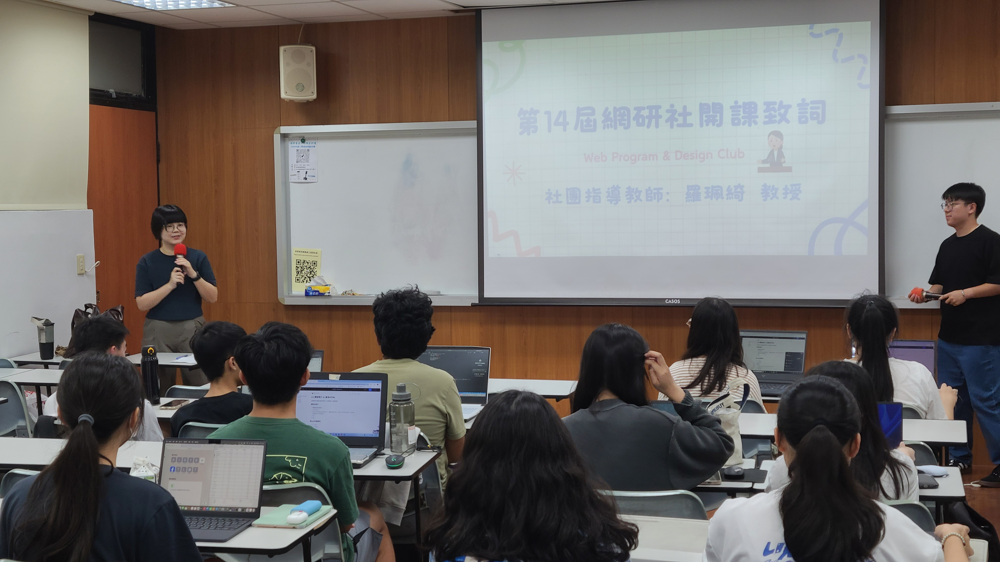
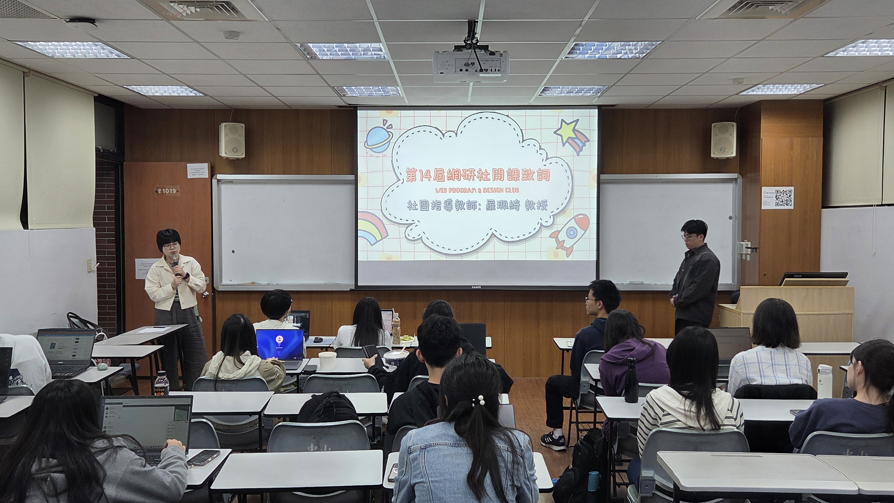
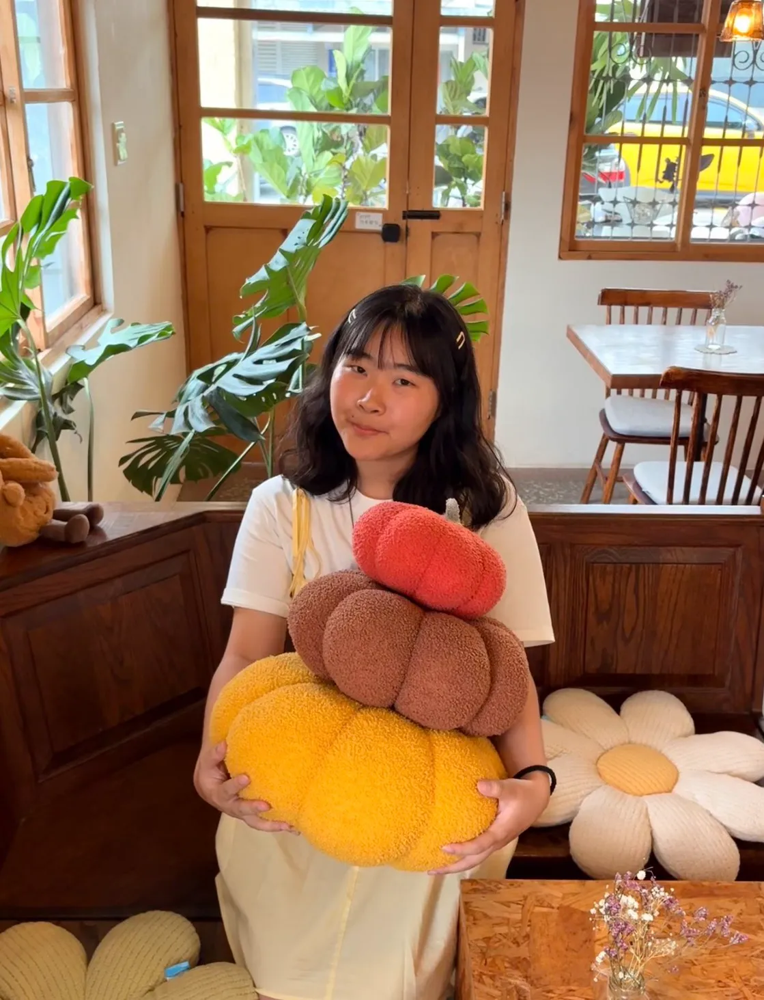
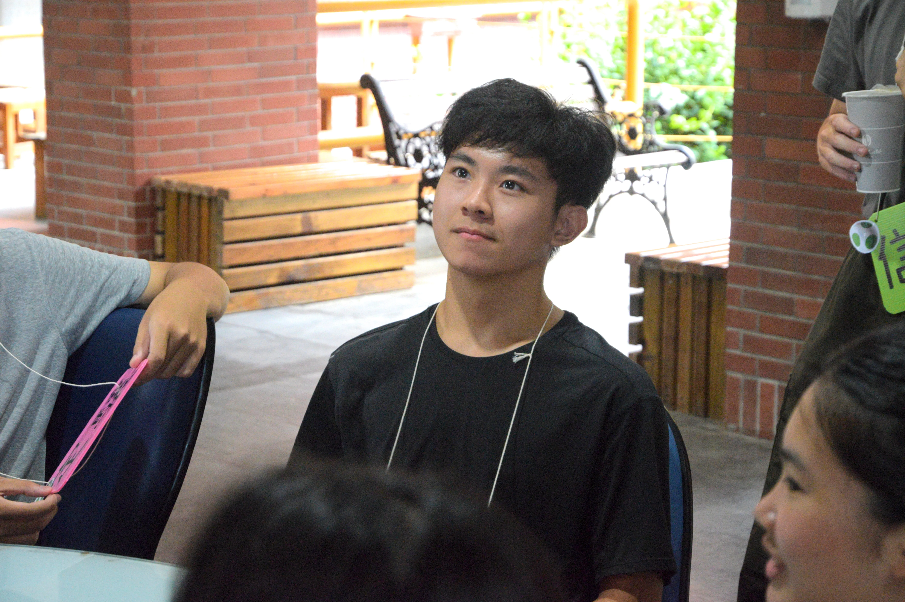
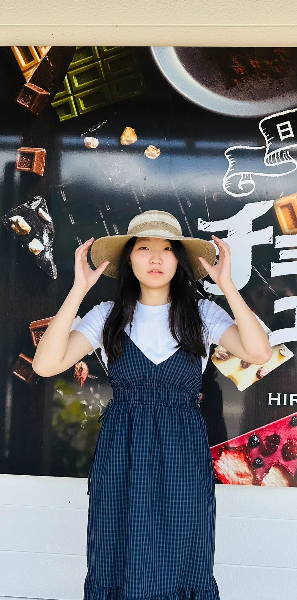
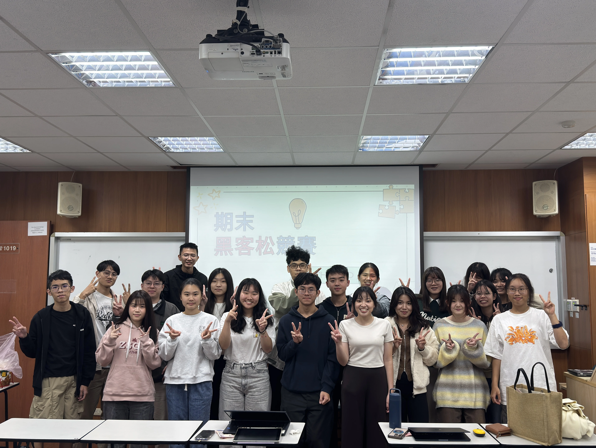
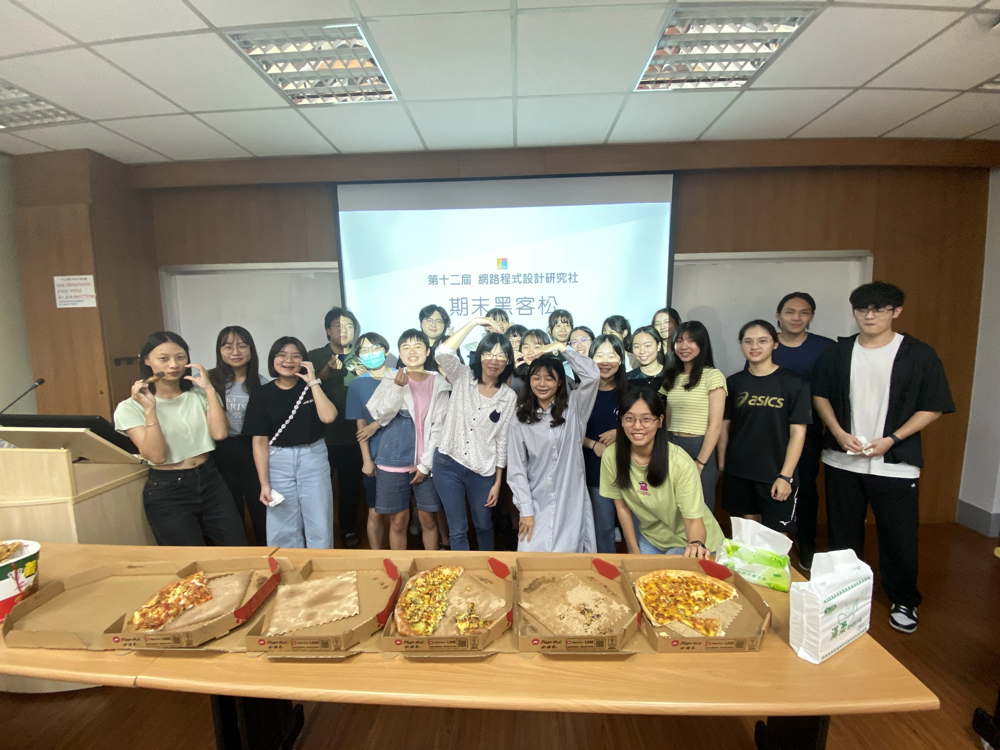
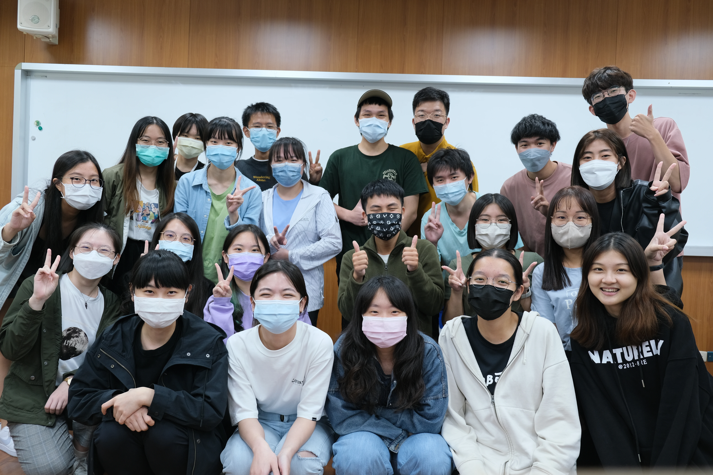
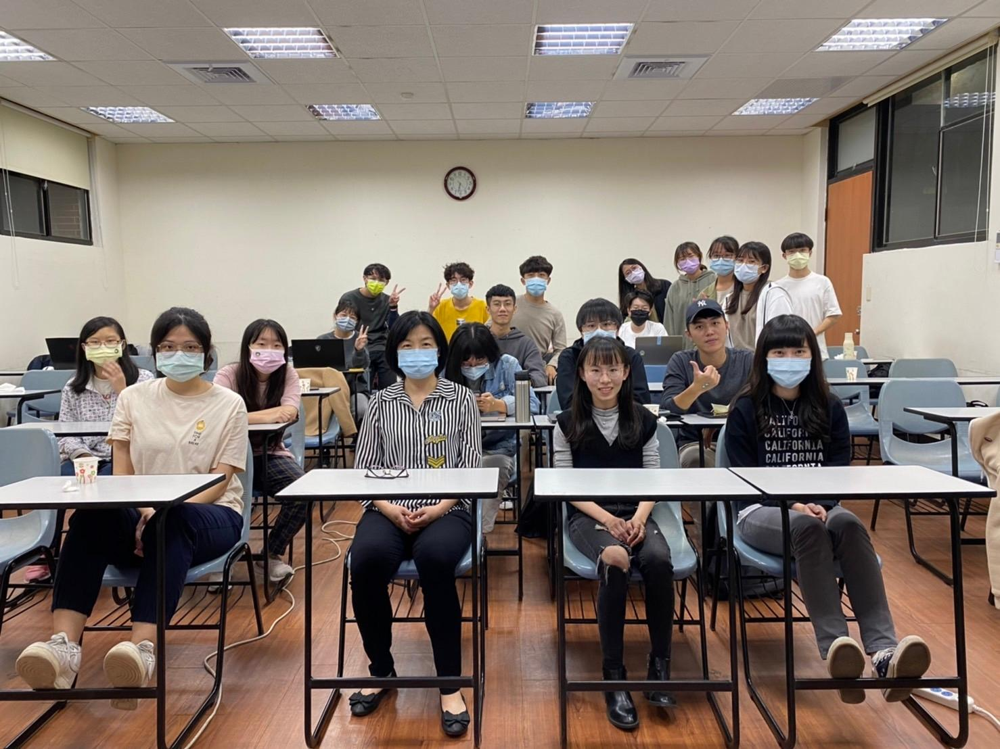

課程資訊
點選下方按鈕，切換不同學期的課程資訊
115-1 網研社開課囉！
本學期由同學與同學分別開設
從零開始寫C++ 與 Web全端開發入門
這學期我們非常榮幸邀請到羅珮綺教授擔任網研社的指導教授。身為創社第一屆元老，羅老師感性地表示，看到自己親手參與開創的社團至今依然活力十足，內心充滿了感動與欣慰。她也期許這份對網路技術熱愛的火苗，能透過每一位社員的手，代代相傳下去！

115-1 學期 期初社課｜羅珮綺教授致詞

115-2 學期 期初社課｜羅珮綺教授致詞
學習專案開發、網頁設計等資管必備技能提早學習與應用課堂外的專業知識
資管系的大一學弟妹可能對程式設計有興趣但缺乏相關知識和資源，因此網研社創立目的之一是為了促進學弟妹接觸資訊領域，提早學習未來可能派上用場的技術
資訊領域需要學習多種語言、框架和新的技術，因此網研社提供同學增加實戰經驗、建立專業的作品集的課外學習機會。
除了理論學習，社團會布置課後作業以及期末比賽，讓學生能將所學知識應用在實際情境中，驗證和改進自己的技能。
點選下方按鈕，切換不同學期的課程資訊
第十五屆幹部名單



| 編號 | 姓名 | 系級 | 報名課程 |
|---|---|---|---|
| 1 | 李柏賢 | 資管118 | Web網頁設計 |
| 2 | 陳佳晨 | 資管117 | Web網頁設計 |
| 3 | 汪俊廷 | 資管118 | Web網頁設計, C 語言 |
| 4 | 陳彥伯 | 資管117 | Web網頁設計 |
| 5 | 李蘇容 | 資管118 | Web網頁設計 |
| 6 | 鄭之翎 | 資管117 | Web網頁設計 |
| 7 | 趙顯彬 | 企管113 | Web網頁設計, C 語言 |
| 8 | 許書函 | 資管118 | Web網頁設計 |
| 9 | 黄宥程 | 資管118 | C 語言 |
| 10 | 汪泓易 | 資管118 | Web網頁設計, C 語言 |
| 11 | 楊婷云 | 資管118 | Web網頁設計, C 語言 |
| 12 | 林宥妤 | 資管118 | Web網頁設計, C 語言 |
| 13 | 蔡以恩 | 資管118 | Web網頁設計 |
| 14 | 林柏翰 | 資管118 | Web網頁設計, C 語言 |
| 15 | 高定驤 | 資管118 | Web網頁設計, C 語言 |
| 16 | 張微咏 | 資管117 | Web網頁設計, C 語言 |
| 17 | 凌于婷 | 資管117 | C 語言 |
| 18 | 王亭立 | 資管117 | Web網頁設計, C 語言 |
| 19 | 何昕芳 | 資管117 | Web網頁設計, C 語言 |
| 20 | 陳粢渝 | 資管117 | Web網頁設計, C 語言 |
| 21 | 廖禹青 | 資管118 | C 語言 |
| 22 | 柯絜甯 | 資管118 | Web網頁設計, C 語言 |
| 23 | 白成君 | 資管118 | Web網頁設計, C 語言 |
| 24 | 林思芸 | 資管118 | Web網頁設計, C 語言 |
| 25 | 上官語恬 | 資管117 | Web網頁設計 |
| 26 | 李若昀 | 資管117 | Web網頁設計, C 語言 |
| 27 | 阮子珊 | 資管117 | Web網頁設計 |
| 28 | 翁圓舒 | 資管117 | Web網頁設計 |
| 29 | 陳顥予 | 資管118 | C 語言 |
| 30 | 李薇欣 | 資管118 | Web網頁設計, C 語言 |
歷屆期末活動

活動年度：114學年度下學期
活動內容：
本學期期末黑客松順利舉行！活動結合了「深度學習」與「React」的實作成果發表，讓社員們在輕鬆交流的氛圍中驗收所學並共同享用美食。

活動年度：114學年度上學期
活動內容：
學期將於
12/16 (二) 晚間在 CM1019 舉辦期末黑客松，活動包含 C 語言與
Web 的 Kahoot 趣味競賽及實作驗收。
邀請講師與社員們一同享用美食、切磋技術，在輕鬆的氛圍中角逐獎金！

活動年度：112學年度
活動內容：
在「Web
程式設計」最後一堂課程中，我們舉辦黑客松網頁程式設計競賽，讓同學在限時兩小時的時間內，以分組的方式實際從零開始製作一個網站！並在最後進行成果發表。
第一名成果：網頁建置

活動年度：111學年度
活動內容：
在「Web
程式設計」最後一堂課程中，我們舉辦黑客松網頁程式設計競賽，讓同學在限時兩小時的時間內，以分組的方式實際從零開始製作一個網站！並在最後進行成果發表。
第一名成果：Web
Crawler

活動年度：110學年度
活動內容：
在「Web
程式設計」最後一堂課程中，我們舉辦黑客松網頁程式設計競賽，讓同學在限時兩小時的時間內，以分組的方式實際從零開始製作一個網站！並在最後進行成果發表。
第一名成果：網頁建置
114學年度參與心得
擔任網研社社長，我有幸參與並主導本屆課程的整體規劃與安排。從找講師到申請經費再到舉辦黑客松，帶領著社團幹部們一起將網研社承辦好，除了參與課程的同學以外，我也從中學習了不少！ 網研社不單只是教程式的地方，更是一個提供在課後想要自主加強學習同學們的優質資源。講師們從零開始循序漸進的教導讓基礎不好的同學也能跟上課程。期許未來的網研社，能一直為想要學習的大家在平日晚上七點鐘點亮一盞燈，陪伴更多願意學習程式的夥伴們一點一點進步。
這是我首次體驗當社團的副社長，能夠和各個幹部一起合作是個非常難得的體驗。除了了解如何和社長共同帶領一個團隊，更深刻理解這個社團的運作模式與核心精神。在網路程式設計研究社中，我們不只是單純地學習程式技術，更在每一次的活動籌備與課程規劃中，培養了溝通協調與解決問題的能力。擔任副社長讓我學會如何在幕後默默支撐整個團隊，在社長需要時給予協助，在幹部迷茫時提供方向。這段經歷讓我成長許多，不僅在技術層面有所精進，更在領導力與團隊合作上獲得了寶貴的磨練。期許未來能將這份經驗傳承下去，讓社團持續蓬勃發展。
在擔任課程長的這一段時間，我更懂得如何尋找講師、和講師溝通協調並傳達資訊。此外，當幹部的期間我也會去聽社團課，學到了資管系課程以外的內容，是不可多得的收穫。也有輔助系上學習的課程，可以讓我更好銜接系上的課（例如剛好網研有上web，就可以在社團時間時討論系上web課的課後作業）。期末黑客松也很有趣～有披薩炸雞吃超級開心。
從大一擔任社員，到大二擔任幹部，這一路上的學習與參與，讓我深刻感受到網研社是一個對學習非常有幫助的社團。一開始，我對程式相關知識都不是很熟悉，但學長姐總是很有耐心地回答問題，讓我在遇到困難時能夠很快的找到解決方法。期末的黑客松活動，是我最期待的活動，大家能夠在輕鬆愉快的氛圍下，將這學期所學到的知識實際應用出來。非常開心能加入網研社，這段經驗讓我收穫許多，也為未來的學習與發展奠定了良好的基礎。
擔任社團資訊長期間，讓我學習到許多課堂上無法獲得的經驗。不僅提升了與幹部及社員之間的溝通與合作能力，也讓我了解一場活動從規劃、宣傳到執行的每個環節都需要細心安排與團隊配合。透過實際參與活動籌備，我更深刻體會到活動經營的細節與不易，也培養了解決問題及應變的能力，這段經歷讓我成長許多。
這一年來作為網研社的資訊長，除了負責大大小小社員的日常庶務，每堂課前的事前準備，已經成為我一週不可或缺的一部分。這份工作雖然多是隱身在幕後的任務，像是處理器材借用、排除技術問題，或是提前佈置教學環境，卻讓我學會了如何有條理地安排事務。雖然偶爾也會擔心自己有哪裡沒顧慮到，但我總是盡全力做好每一次的準備工作。看著每週的社團課程都能因為這些前置作業而順利展開，那份成就感便是我最大的收穫。這段經歷讓我變得更加細心，也更懂得如何成為團隊中可靠的後盾。
身為網研社的活動長，這一年我不只學到許多網頁實作、程式設計與團隊合作的知識，也更深刻體會到舉辦活動背後所需要的規劃與協調能力。從安排課程、聯繫講師、協助社員，到籌備黑客松等活動，每個環節都需要耐心，也需要與其他幹部密切合作。雖然過程中有時會遇到突發狀況或壓力，但看到大家願意參與、學習，甚至完成自己的作品，就覺得一切都很值得。對我來說，網研社不只是學習技術的地方，也是一個讓大家互相交流、共同成長的社群。這段經驗讓我收穫很多，也讓我更期待未來能繼續為其他人帶來更多有意義的活動。
這學年擔任網路程式研究社財務長，主要負責協助處理社團補助、保證金收取與退還，以及期末黑客松活動的獎金規劃與餐點訂購等事務。在與其他幹部協調與對社員溝通的過程中，我學會了更有條理地安排流程，也提升了溝通與協作能力，理解團隊分工的重要性。面對黑客松活動的準備，也讓我更清楚活動細節管理與財務控管的責任。除此之外，社團提供的程式課程讓我有機會學習更多實作技能，獲益良多。這段經驗不僅讓我在能力上成長，也讓我更珍惜團隊共同完成目標的過程。
113學年度參與心得
作為網研社社長，我有幸參與並主導本屆課程的整體規劃與安排。在每次排課與講師溝通的過程中，我都能感受到講師們的熱忱與用心，也因此更加期待課程真正呈現在社員面前的樣貌。每當看到剛接觸程式的學弟妹們，從一開始的生疏與緊張，到後來能獨立完成專題、寫出屬於自己的作品，這份成長與轉變，讓我感到特別感動。 我們希望社團課程不只是教語法，而是能陪伴每一位同學在學習中找回自信、在解題中感受到成就。從0開始的同學們，能在這裡循序漸進地熟悉程式語言，逐步累積能力，也逐步相信自己的可能性。我深信，只要給予足夠的資源與支持，每個人都可以寫出屬於自己的精彩故事。希望未來的網研社，能繼續成為這樣一個支持學習、鼓勵挑戰的平台，陪伴更多學生踏上程式設計這條路。
網研社每個學期都會開設不同的課程，每位講師都是資管系的學長姐，除了充實的上課內容外，也會分享許多經驗，每次上課都很充實又開心
這次很榮幸能從社員當上副社長，除了參與幹部的討論外，也了解到每位社師在準備課程的辛苦與付出，也看到了新加入的學弟妹們用心聆聽課程的樣貌，很開心能繼續延續網研社的活動，也期許每次課程都有更多心血的加入！
從大一開始網研社就提供了我許多幫助，由於課程是系上的學長姐所教授的，他們都會提供所學的精華，也會提醒一些容易犯錯的觀念。這讓我除了在學習的路上可以少繞很多路，也讓我提早認識及學習更多知識及好用的工具。自從擔任幹部後，因為有一起跟課，讓我又複習了許多基礎的概念，也學習到很多新的知識。除此之外，看著學弟妹認真學習的模樣也讓我再次體會到網研社所創造出的良好學習氛圍及環境。 希望網研社未來也能延續下去，提供學生們可以互相幫助場所，也讓在學生們在專業領域上更加進步。
自大一上學期接觸網研以來，我的程式語言能力有了顯著提升，也從講師們的分享中了解到許多與資管系相關的出路與發展方向。 這學期，我很幸運被選為資訊長，這讓我有更多機會與講師和學弟妹們交流，不僅深化了我對程式語言的理解，也學會如何將原本生澀的程式知識轉化為具體實用的成果，進一步提升了我的實作能力與思維廣度。
在網研社，我體會到了一個非常良好的共同學習環境。不僅能透過與學長姐的互動交流吸收到許多寶貴的經驗，在課程與期末活動中，也有機會與同儕深入交流與相互學習，讓整個學習過程更加有意義。 這幾個學期下來，讓我複習到了許多以前的程式理論，也提早接觸到許多不同領域的內容，預先學習了未來會用到的知識與工具。學長姐們在教學上非常用心，總是一步一步地從理論帶到實作應用，讓原本生硬難懂的知識變得更具體且更容易吸收，很榮幸能參與這麼有意義的社團！
加入網研社後，我從零開始學習程式設計，逐步建立起自己的邏輯思維與實作能力。每週的課程不僅補足了課堂上較少接觸的知識，也讓我對資訊領域產生更深的興趣。成為幹部後，我有更多機會參與課程規劃與社內運作，從中學習到溝通與協調的重要性。網研社不只是學習的平台，更是我大學生活中不可或缺的一部分。
網研社讓我受益良多，特別是期末舉辦的黑客松活動，讓我可以複習過去所學的知識與技能。比起單純聽課，親自動手解題讓我對概念有更清晰的理解，也發現自己在邏輯思考與問題在活動分析上的不足。也可以跟同學和講師一起討論，大家不僅能更深入理解課程內容，還能嘗試解決更具挑戰性的題目。這次的挑戰讓我更加有信心面對未來的課程，也激發我想要持續學習的動力。
黑客松這個活動讓大家能在一個輕鬆的氛圍下，運用自己在前幾堂課所學到的知識，完成講師所設計的題目。不僅會讓大家對這些內容有更深的了解，也可以透過這個機會練習，藉此得知自己尚未熟練的部分有哪些，往後也能朝這個方向去持續地精進。同學之間也能互相交流討論，而且講師也會在旁邊適時地提供幫助，不會有太大的壓力。表現優異的人還有機會獲得獎品，學習與收穫兼得，是一個非常有價值的經驗。
112學年度參與心得
網研社邁入第十二屆，今年的參與程度非常踴躍，讓我們更有動力舉辦各種活動讓網研社更加活潑有趣，我參加網研的四年來，網研一直都是資管系能學到各種實用知識的珍貴社團，而最近也越來越多外系加入，不禁顯示這個社團的重要性，也代表我們有成功把網研傳承下去！
今年是網研社的第十二屆，社團的蓬勃發展可見一斑，不僅有眾多本系學生的熱情參與，甚至還吸引到外系的同學加入。這是我第一次擔任社團的幹部，在舉辦活動的過程中，我體會到了合作以及人際溝通的重要性，合作是推動事情前進的關鍵而人際溝通是確保順利執行活動的關鍵因素，與社團成員、其他幹部以及合作夥伴之間的有效溝通有助於確保每個人對活動目標的理解一致，並確保任務的明確分工，使得活動的策劃和執行更加流暢。
這是我第一次擔任網研社的幹部，在擔任網研社幹部的過程中，透過舉辦各種活動，我深刻體會到團體協作的重要性，也非常感謝每一位幹部的努力，同時，見證網研社的成長與多元化，感到榮幸與滿足。從以前就一直知道網研社是資管重要的一個社團，這次親自擔任幹部，看到非常多的學弟妹上課認真的模樣，都覺得非常感動，期待未來能繼續為網研社的繁榮與發展盡一份心力。
在大一的時候就有參加過網研，很感謝在大二的時候學姊的信任並把這個職位交給我，我學到了怎麼和其他人一起溝通和合作。這學期在跟課的過程中看到學弟妹積極的學習以及提問，我看到了網研的成長與傳承，希望未來能持續看到網研的進步與發展
111學年度參與心得
我是在大一的時候接觸到網研社的，剛上大學還不太懂怎麼寫程式，但又希望自己能快點熟悉未來需要用到的技能，所以報名了社課。那個時候發現網研社提供了很好的學習資源，讓學弟妹們可以零成本的學習程式語言，所以希望自己也能夠帶給學弟妹們一樣好的環境學習。
我從大一就已經進入了網研社，在裡面真的學到了很多課堂裡面不一定學的到的知識，不管是大一新生，還是高年級生，我相信都可以在網研的課程裡面學習到新的東西！
剛進資管系的我對於程式設計還很陌生，因此一聽到網研社提供大家不用付費就可以學習程式設計的課程時毫不猶豫的就報名了，講師跟幹部們都很耐心的幫助大家，讓我能夠更輕鬆的銜接上大一的課程。我覺得網研社真的能給剛接觸程式設計的學弟妹帶來很大的幫助，所以希望自己加入網研社後也能盡可能的幫助到學弟妹們。
依稀記得在高三下準備中山資管的備審資料時，透過IOH開放個人經驗平台，學長姐就介紹了系上資源「網研社」，所以等到就讀中山資管後，就和朋友們一起報名了社課。當時報名的課程是林子紘學長的網頁設計，對於之前完全沒有寫過WEB經驗的我，感到十分慌亂，經過子紘學長一步一步的耐心教學，以及幹部們非常用心的幫助下，讓我對網頁設計產生濃厚的興趣，打下良好的基礎。我覺得，網研社真的對之前沒有接觸過程式設計的學弟妹們有著莫大的幫助，希望之後我也可以盡我所能幫助學弟妹～
在大一上的時候看到學長姐在宣傳網研社，對於當時還沒有什麼程式基礎的我來說，覺得著是一個在課餘時間接觸程式很好的機會，就馬上報名了。 我參加的課程是Web網路設計，講師林子紘學長授課的風格輕鬆有趣，課程中也會隨時注意社員的學習狀況，讓我每堂課都學到很多，過得很充實。我覺得參加網研社讓我收穫滿滿，也希望能將這個良好的學習機會推薦給學弟妹們。
剛進中山資管時，藉著對於程式領域的熱愛，因而想要學習更多相關的知識。之後在學長姐的推薦下加入網研社學習，而這個決定我覺得非常的值得，因為網研社的替我打下了非常好的基礎，透過學長姐從零開始的引導，讓我之後到正課學習時也不致於感到太辛苦。網研的課程讓我收穫滿滿，我也希望學弟妹們也能獲得此機會一同學習。
在大一剛來到中山資管時，對於沒有程式基礎的我總是很擔心會在課堂上跟不上大家的進度，當時剛好看到網研社的學長姐在招生，就馬上報名了。這對我當時的影響很大，能夠提早一些時間學習到程式，也讓我之後的課程更順利。而在大三時剛好有幸可以當到網研社的幹部，我也希望自己可以將網研社的精神給傳承下去。
第一次聽到網研課是在期初大會的時候，認為自己在程式方面學的比較慢，覺得多一個管道可以學習程式語言是很好的機會，正式上課後發現講師真的特別用心與耐心，會時刻關心我們的學習狀況，並適時地調整課程，讓我們都能很好的建立基礎，因此也更希望能藉由這個社團幫助到更多學弟妹。